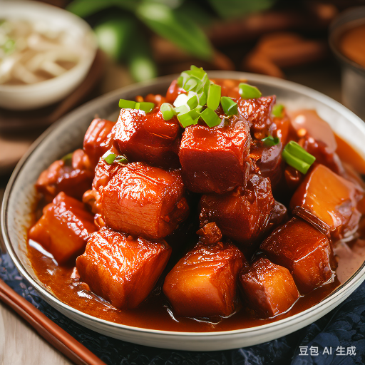

Braised Pork

Description
Rich and savory dish with tender pork and a deep, flavorful sauce. A classic Chinese delicacy that is loved by many.
Ingredients
- Pork belly: 500g
- Ginger: a small piece
- Green onions: a few
- Rock sugar: a small amount
- Soy sauce: appropriate amount
- Cooking oil: appropriate amount
- Star anise: a few
- Cinnamon: a small piece
Steps
- Cut the pork belly into small pieces, blanch it with boiling water, and remove it.
- Heat the oil in a pan, add the rock sugar and stir-fry until it turns brown, add the pork belly and stir-fry until it is evenly coated with sugar.
- Add the ginger, green onions, star anise, and cinnamon, and stir-fry until fragrant.
- Add soy sauce to taste, add a little water, simmer over low heat until the pork is tender and the sauce is thick, and serve.